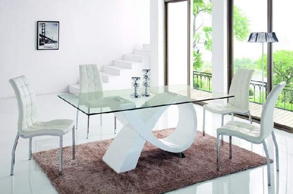

Д.изайнерская мебель способна создать в интерьере совершенно неповторимую обстановку, так как довольно часто она изготавливается под заказ в единичных экземплярах. Невозможно пройти мимо такой мебели. Волей неволей она останавливает на себе взгляд, привлекая своей креативностью и неординарностью. В нашей статье мы попробовали собрать лучшие фото-примеры, где дизайнерская мебель представлена в интерьерах помещений различной функциональной принадлежности. Ознакомьтесь с новым материалом и, возможно вы также решитесь приобрести один или несколько подобных предметов мебели.
Дизайн в деталях
Для изготовления мебели дизайнерами могут быть использованы различные материалы. Очень часто таковыми являются стекло, металл и кожа.Дизайнерская мебель может быть сконструирована из стекла и металла, как, например, этот оригинальный столик Essey Illusion. Красивые конструкции создаются и из пластика. На фото мы видим примеры оригинальной мебели с креслами, стульями и столиком.
